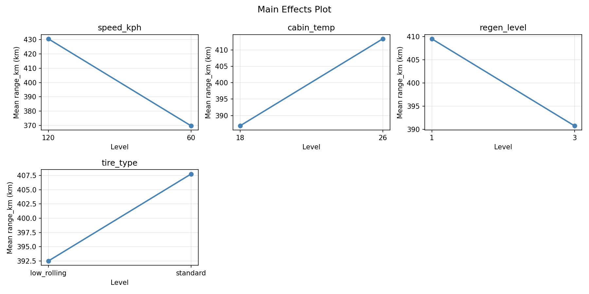
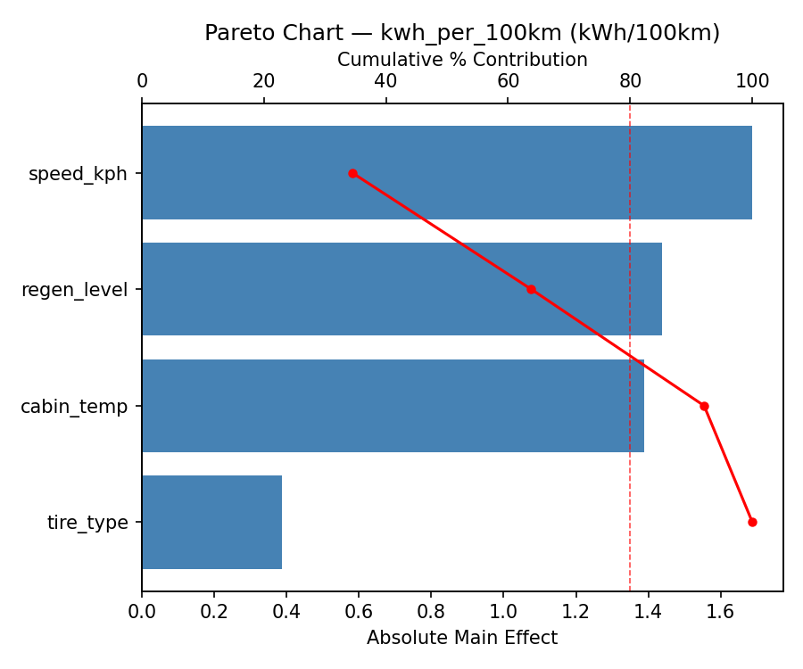
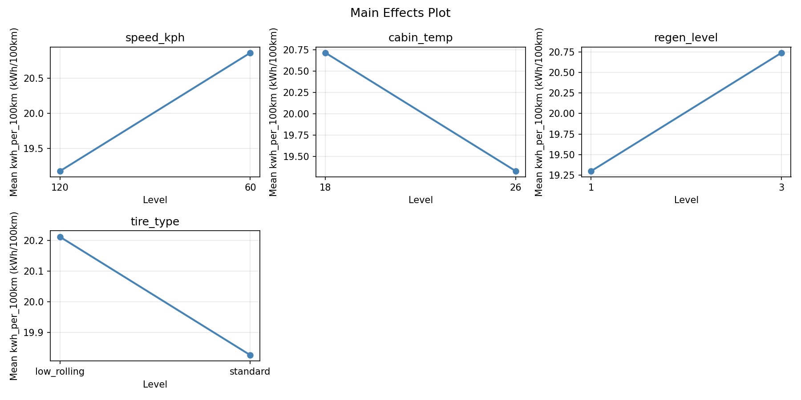
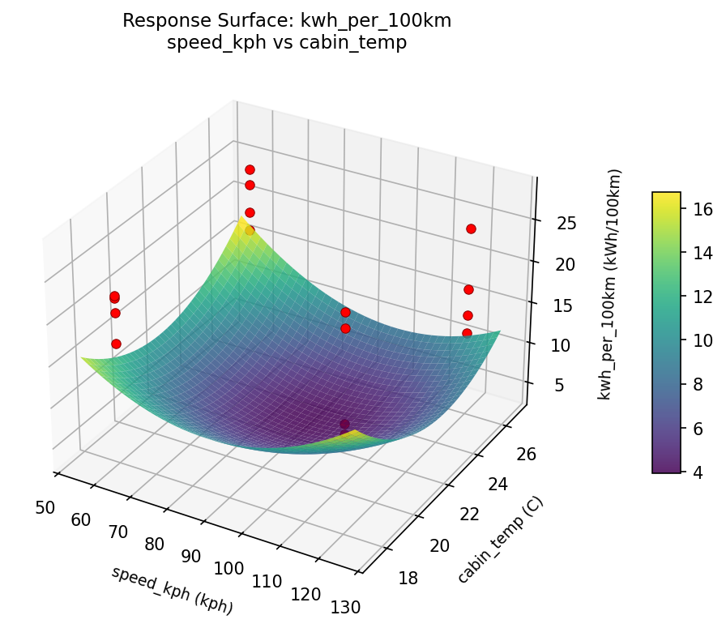
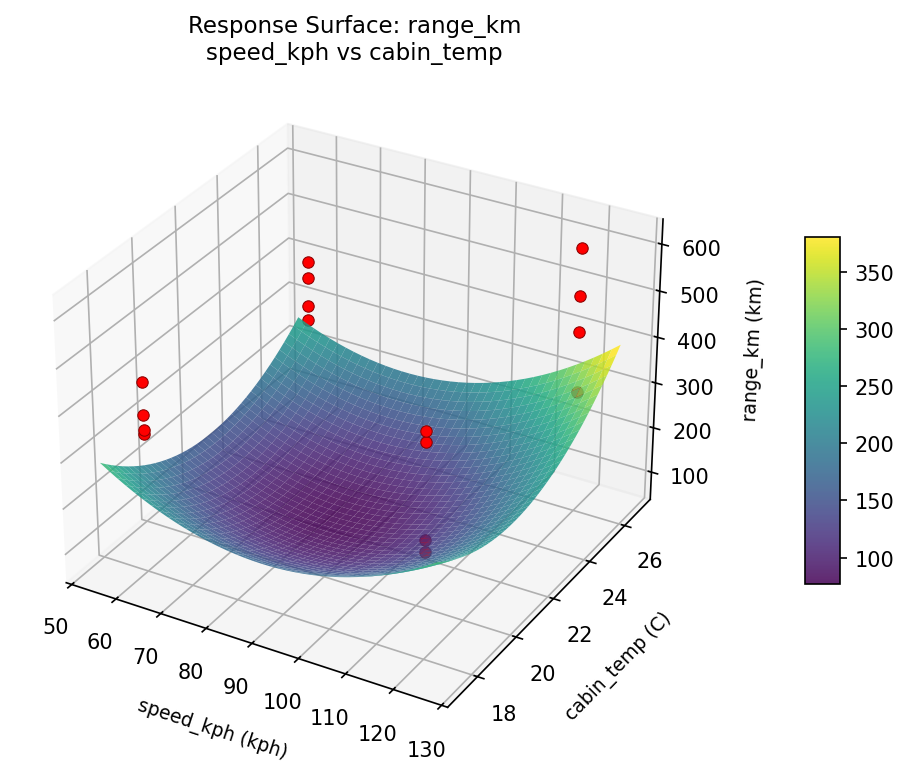

Summary
This experiment investigates ev range optimization. Full factorial of driving speed, cabin temperature, regenerative braking level, and tire type to maximize range and minimize energy consumption.
The design varies 4 factors: speed kph (kph), ranging from 60 to 120, cabin temp (C), ranging from 18 to 26, regen level (level), ranging from 1 to 3, and tire type, ranging from standard to low_rolling. The goal is to optimize 2 responses: range km (km) (maximize) and kwh per 100km (kWh/100km) (minimize). Fixed conditions held constant across all runs include battery kwh = 75, vehicle type = suv.
A full factorial design was used to explore all 16 possible combinations of the 4 factors at two levels. This guarantees that every main effect and interaction can be estimated independently, at the cost of a larger experiment (16 runs).
Quadratic response surface models were fitted to capture potential curvature and factor interactions. The RSM contour plots below visualize how pairs of factors jointly affect each response.
Key Findings
For range km, the most influential factors were speed kph (50.1%), cabin temp (21.9%), regen level (15.5%). The best observed value was 614.0 (at speed kph = 60, cabin temp = 26, regen level = 1).
For kwh per 100km, the most influential factors were speed kph (34.4%), regen level (29.3%), cabin temp (28.3%). The best observed value was 12.3 (at speed kph = 60, cabin temp = 26, regen level = 1).
Recommended Next Steps
- Consider whether any fixed factors should be varied in a future study.
Experimental Setup
Factors
| Factor | Low | High | Unit |
|---|
speed_kph | 60 | 120 | kph |
cabin_temp | 18 | 26 | C |
regen_level | 1 | 3 | level |
tire_type | standard | low_rolling | |
Fixed: battery_kwh = 75, vehicle_type = suv
Responses
| Response | Direction | Unit |
|---|
range_km | ↑ maximize | km |
kwh_per_100km | ↓ minimize | kWh/100km |
Configuration
{
"metadata": {
"name": "EV Range Optimization",
"description": "Full factorial of driving speed, cabin temperature, regenerative braking level, and tire type to maximize range and minimize energy consumption"
},
"factors": [
{
"name": "speed_kph",
"levels": [
"60",
"120"
],
"type": "continuous",
"unit": "kph"
},
{
"name": "cabin_temp",
"levels": [
"18",
"26"
],
"type": "continuous",
"unit": "C"
},
{
"name": "regen_level",
"levels": [
"1",
"3"
],
"type": "continuous",
"unit": "level"
},
{
"name": "tire_type",
"levels": [
"standard",
"low_rolling"
],
"type": "categorical",
"unit": ""
}
],
"fixed_factors": {
"battery_kwh": "75",
"vehicle_type": "suv"
},
"responses": [
{
"name": "range_km",
"optimize": "maximize",
"unit": "km"
},
{
"name": "kwh_per_100km",
"optimize": "minimize",
"unit": "kWh/100km"
}
],
"settings": {
"operation": "full_factorial",
"test_script": "use_cases/119_ev_range_optimization/sim.sh"
}
}
Experimental Matrix
The Full Factorial Design produces 16 runs. Each row is one experiment with specific factor settings.
| Run | speed_kph | cabin_temp | regen_level | tire_type |
|---|
| 1 | 60 | 26 | 3 | low_rolling |
| 2 | 120 | 18 | 1 | low_rolling |
| 3 | 60 | 26 | 1 | low_rolling |
| 4 | 60 | 26 | 3 | standard |
| 5 | 120 | 26 | 3 | standard |
| 6 | 120 | 18 | 3 | standard |
| 7 | 120 | 26 | 1 | standard |
| 8 | 120 | 18 | 1 | standard |
| 9 | 60 | 18 | 1 | low_rolling |
| 10 | 60 | 18 | 3 | standard |
| 11 | 120 | 26 | 1 | low_rolling |
| 12 | 120 | 26 | 3 | low_rolling |
| 13 | 60 | 26 | 1 | standard |
| 14 | 120 | 18 | 3 | low_rolling |
| 15 | 60 | 18 | 1 | standard |
| 16 | 60 | 18 | 3 | low_rolling |
Step-by-Step Workflow
1
Preview the design
$ python doe.py info --config use_cases/119_ev_range_optimization/config.json
2
Generate the runner script
$ python doe.py generate --config use_cases/119_ev_range_optimization/config.json \
--output use_cases/119_ev_range_optimization/results/run.sh --seed 42
3
Execute the experiments
$ bash use_cases/119_ev_range_optimization/results/run.sh
4
Analyze results
$ python doe.py analyze --config use_cases/119_ev_range_optimization/config.json
5
Get optimization recommendations
$ python doe.py optimize --config use_cases/119_ev_range_optimization/config.json
ℹ
Multi-Objective Optimization
This experiment has conflicting objectives (range_km (↑), kwh_per_100km (↓)). Use --multi to find the best compromise using desirability functions:
$ python doe.py optimize --config use_cases/119_ev_range_optimization/config.json --multi
6
Generate the HTML report
$ python doe.py report --config use_cases/119_ev_range_optimization/config.json \
--output use_cases/119_ev_range_optimization/results/report.html
Real-World Experiment Workflow
ℹ
Physical Vehicle Test? Use the Manual Workflow
Automotive experiments require real driving conditions, fuel consumption measurement, and physical equipment adjustments. The simulation script above is for demonstration. For your real experiments, use record, status, and export-worksheet.
$ python doe.py export-worksheet --config use_cases/119_ev_range_optimization/config.json \
--format csv --output worksheet.csv
$ python doe.py status --config use_cases/119_ev_range_optimization/config.json
$ python doe.py record --config use_cases/119_ev_range_optimization/config.json --run 1
$ python doe.py analyze --config use_cases/119_ev_range_optimization/config.json --partial
$ python doe.py analyze --config use_cases/119_ev_range_optimization/config.json
$ python doe.py optimize --config use_cases/119_ev_range_optimization/config.json
$ python doe.py report --config use_cases/119_ev_range_optimization/config.json \
--output report.html
✔
Works Without a Test Script
The analysis pipeline doesn't care how results were produced. Record your measurements with record, and the full analysis, optimization, and reporting pipeline works identically. Use --partial to get early insights before all runs are complete.
Features Exercised
| Feature | Value |
|---|
| Design type | full_factorial |
| Factor types | continuous (3), categorical (1) |
| Arg style | double-dash |
| Responses | 2 (range_km ↑, kwh_per_100km ↓) |
| Total runs | 16 |
Analysis Results
Generated from actual experiment runs using the DOE Helper Tool.
Response: range_km
Top factors: speed_kph (50.1%), cabin_temp (21.9%), regen_level (15.5%).
Pareto Chart

Main Effects Plot

Response: kwh_per_100km
Top factors: speed_kph (34.4%), regen_level (29.3%), cabin_temp (28.3%).
Pareto Chart

Main Effects Plot

Response Surface Plots
3D surfaces fitted with quadratic RSM. Red dots are observed data points.
kwh per 100km cabin temp vs regen level

kwh per 100km speed kph vs cabin temp

kwh per 100km speed kph vs regen level

range km cabin temp vs regen level

range km speed kph vs cabin temp

range km speed kph vs regen level

Full Analysis Output
RSM surface: rsm_range_km_speed_kph_vs_cabin_temp.png
RSM surface: rsm_range_km_speed_kph_vs_regen_level.png
RSM surface: rsm_range_km_cabin_temp_vs_regen_level.png
RSM surface: rsm_kwh_per_100km_speed_kph_vs_cabin_temp.png
RSM surface: rsm_kwh_per_100km_speed_kph_vs_regen_level.png
RSM surface: rsm_kwh_per_100km_cabin_temp_vs_regen_level.png
=== Main Effects: range_km ===
Factor Effect Std Error % Contribution
--------------------------------------------------------------
speed_kph -60.7500 24.7322 50.1%
cabin_temp 26.5000 24.7322 21.9%
regen_level -18.7500 24.7322 15.5%
tire_type 15.2500 24.7322 12.6%
=== Interaction Effects: range_km ===
Factor A Factor B Interaction % Contribution
------------------------------------------------------------------------
regen_level tire_type 97.2500 44.4%
speed_kph cabin_temp -44.0000 20.1%
speed_kph tire_type -43.7500 20.0%
cabin_temp regen_level 29.0000 13.2%
cabin_temp tire_type -5.0000 2.3%
speed_kph regen_level -0.2500 0.1%
=== Summary Statistics: range_km ===
speed_kph:
Level N Mean Std Min Max
------------------------------------------------------------
120 8 430.5000 127.3062 269.0000 614.0000
60 8 369.7500 51.5385 297.0000 449.0000
cabin_temp:
Level N Mean Std Min Max
------------------------------------------------------------
18 8 386.8750 92.9492 269.0000 520.0000
26 8 413.3750 109.2297 297.0000 614.0000
regen_level:
Level N Mean Std Min Max
------------------------------------------------------------
1 8 409.5000 86.0913 294.0000 520.0000
3 8 390.7500 115.5827 269.0000 614.0000
tire_type:
Level N Mean Std Min Max
------------------------------------------------------------
low_rolling 8 392.5000 90.7918 269.0000 520.0000
standard 8 407.7500 112.2316 294.0000 614.0000
=== Main Effects: kwh_per_100km ===
Factor Effect Std Error % Contribution
--------------------------------------------------------------
speed_kph 1.6875 1.2001 34.4%
regen_level 1.4375 1.2001 29.3%
cabin_temp -1.3875 1.2001 28.3%
tire_type -0.3875 1.2001 7.9%
=== Interaction Effects: kwh_per_100km ===
Factor A Factor B Interaction % Contribution
------------------------------------------------------------------------
regen_level tire_type -4.6375 40.0%
speed_kph cabin_temp 2.3125 19.9%
speed_kph tire_type 2.1125 18.2%
cabin_temp regen_level -1.1875 10.2%
cabin_temp tire_type 0.7375 6.4%
speed_kph regen_level -0.6125 5.3%
=== Summary Statistics: kwh_per_100km ===
speed_kph:
Level N Mean Std Min Max
------------------------------------------------------------
120 8 19.1750 6.3023 12.3000 28.2000
60 8 20.8625 2.8339 16.7000 25.0000
cabin_temp:
Level N Mean Std Min Max
------------------------------------------------------------
18 8 20.7125 5.0896 14.1000 28.2000
26 8 19.3250 4.7301 12.3000 25.0000
regen_level:
Level N Mean Std Min Max
------------------------------------------------------------
1 8 19.3000 4.5356 14.1000 26.4000
3 8 20.7375 5.2560 12.3000 28.2000
tire_type:
Level N Mean Std Min Max
------------------------------------------------------------
low_rolling 8 20.2125 4.9020 14.1000 28.2000
standard 8 19.8250 5.0261 12.3000 26.4000
Pareto chart (range_km): use_cases/119_ev_range_optimization/results/analysis/pareto_range_km.png
Pareto chart (kwh_per_100km): use_cases/119_ev_range_optimization/results/analysis/pareto_kwh_per_100km.png
Main effects (range_km): use_cases/119_ev_range_optimization/results/analysis/main_effects_range_km.png
Main effects (kwh_per_100km): use_cases/119_ev_range_optimization/results/analysis/main_effects_kwh_per_100km.png
Optimization Recommendations
=== Optimization: range_km ===
Direction: maximize
Best observed run: #16
speed_kph = 60
cabin_temp = 26
regen_level = 1
tire_type = low_rolling
Value: 614.0
RSM Model (linear, R² = 0.1951, Adj R² = -0.0975):
Coefficients:
intercept +400.1250
speed_kph -4.5000
cabin_temp +12.7500
regen_level -2.7500
tire_type -40.0000
RSM Model (quadratic, R² = 0.6885, Adj R² = -3.6722):
Coefficients:
intercept +80.0250
speed_kph -4.5000
cabin_temp +12.7500
regen_level -2.7500
tire_type -40.0000
speed_kph*cabin_temp -48.8750
speed_kph*regen_level +13.8750
speed_kph*tire_type +21.6250
cabin_temp*regen_level -37.3750
cabin_temp*tire_type -7.8750
regen_level*tire_type +4.3750
speed_kph^2 +80.0250
cabin_temp^2 +80.0250
regen_level^2 +80.0250
tire_type^2 +80.0250
Curvature analysis:
tire_type coef=+80.0250 convex (has a minimum)
speed_kph coef=+80.0250 convex (has a minimum)
cabin_temp coef=+80.0250 convex (has a minimum)
regen_level coef=+80.0250 convex (has a minimum)
Notable interactions:
speed_kph*cabin_temp coef=-48.8750 (antagonistic)
cabin_temp*regen_level coef=-37.3750 (antagonistic)
speed_kph*tire_type coef=+21.6250 (synergistic)
speed_kph*regen_level coef=+13.8750 (synergistic)
cabin_temp*tire_type coef=-7.8750 (antagonistic)
regen_level*tire_type coef=+4.3750 (synergistic)
Predicted optimum (from linear model):
speed_kph = 60
cabin_temp = 26
regen_level = 1
tire_type = low_rolling
Predicted value: 460.1250
Model quality: Weak fit — consider adding center points or using a different design.
Factor importance:
1. tire_type (effect: -80.0, contribution: 66.7%)
2. cabin_temp (effect: 25.5, contribution: 21.2%)
3. speed_kph (effect: 9.0, contribution: 7.5%)
4. regen_level (effect: -5.5, contribution: 4.6%)
=== Optimization: kwh_per_100km ===
Direction: minimize
Best observed run: #16
speed_kph = 60
cabin_temp = 26
regen_level = 1
tire_type = low_rolling
Value: 12.3
RSM Model (linear, R² = 0.1990, Adj R² = -0.0923):
Coefficients:
intercept +20.0188
speed_kph +0.0312
cabin_temp -0.7187
regen_level -0.0562
tire_type +1.9437
RSM Model (quadratic, R² = 0.6227, Adj R² = -4.6589):
Coefficients:
intercept +4.0038
speed_kph +0.0312
cabin_temp -0.7187
regen_level -0.0562
tire_type +1.9438
speed_kph*cabin_temp +2.0687
speed_kph*regen_level -0.8188
speed_kph*tire_type -0.7937
cabin_temp*regen_level +1.8813
cabin_temp*tire_type -0.1188
regen_level*tire_type +0.1437
speed_kph^2 +4.0038
cabin_temp^2 +4.0038
regen_level^2 +4.0038
tire_type^2 +4.0038
Curvature analysis:
speed_kph coef=+4.0038 convex (has a minimum)
cabin_temp coef=+4.0038 convex (has a minimum)
regen_level coef=+4.0038 convex (has a minimum)
tire_type coef=+4.0038 convex (has a minimum)
Notable interactions:
speed_kph*cabin_temp coef=+2.0687 (synergistic)
cabin_temp*regen_level coef=+1.8813 (synergistic)
speed_kph*regen_level coef=-0.8188 (antagonistic)
speed_kph*tire_type coef=-0.7937 (antagonistic)
Predicted optimum (from linear model):
speed_kph = 120
cabin_temp = 18
regen_level = 1
tire_type = standard
Predicted value: 22.7688
Model quality: Weak fit — consider adding center points or using a different design.
Factor importance:
1. tire_type (effect: 3.9, contribution: 70.7%)
2. cabin_temp (effect: -1.4, contribution: 26.1%)
3. regen_level (effect: -0.1, contribution: 2.0%)
4. speed_kph (effect: -0.1, contribution: 1.1%)